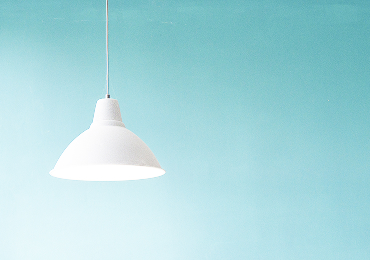
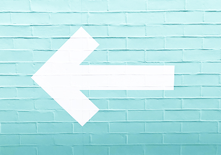
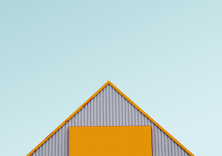
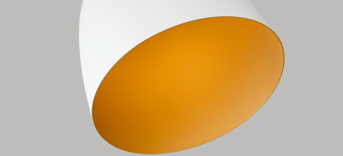
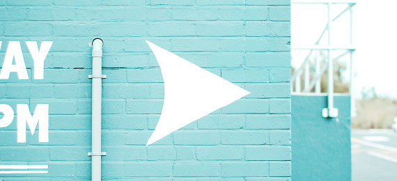

Using UX Design to Build a Sustainable Future
Transformation has to be driven by everybody, not just by climate groups, and we have a responsibility to use our

UI has to make a huge visual difference between warning, an alert and a success.

UI has to make a huge visual difference between warning, an alert and a success.

Is it possible to create a delightful user experience without following best UX practices?

LinkedIn is on a clear mission to make professionals more successful by connecting the global workforce and as we learned — diversity and success go hand in hand

Is it possible to create a delightful user experience without following best UX practices?
We work with clients around the world from our headquarters in Charleston, South Carolina.
We focus on naming, branding, brand narratives, website design and development, and brand experiences.